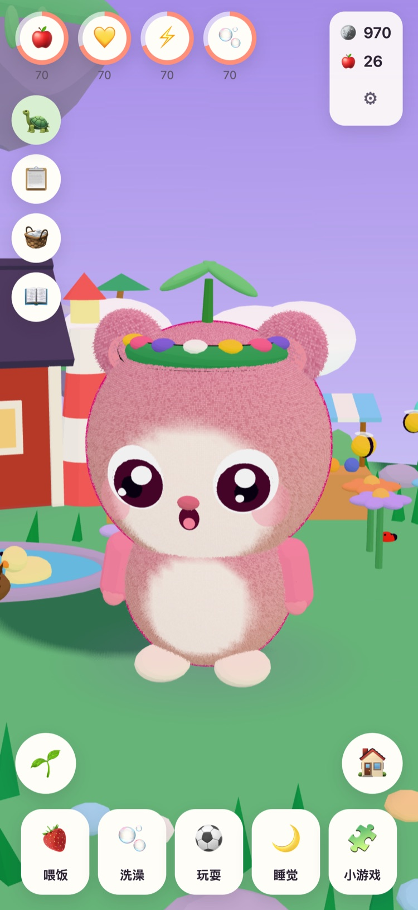
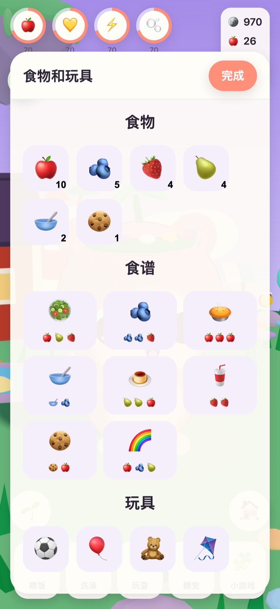
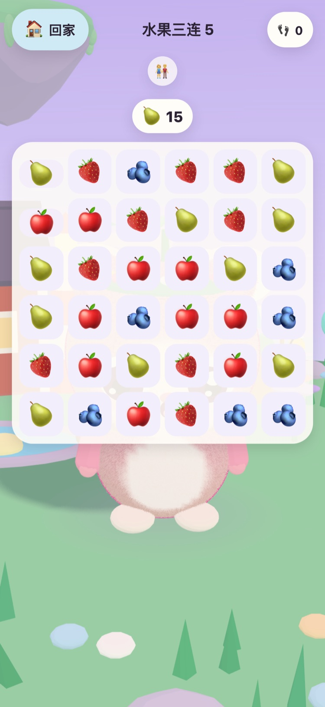
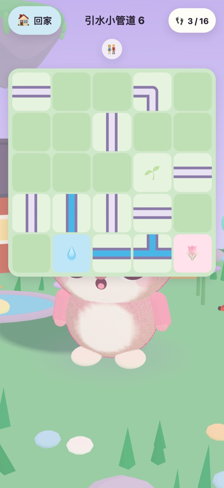
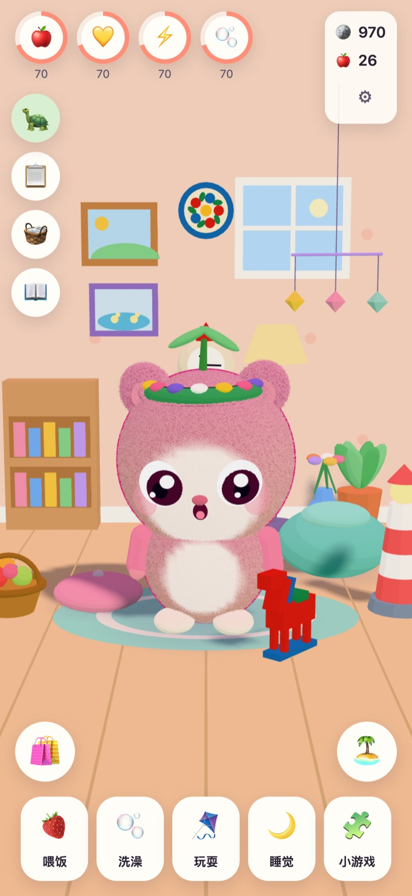
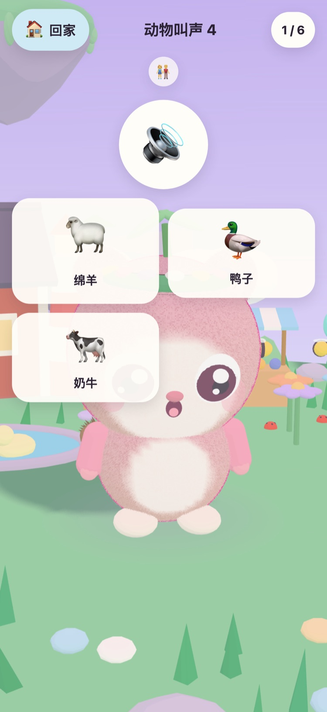

JUNOLittle Worlds
孵出一只Juno，照顾它，再玩一玩温和的小游戏，唤醒一座漂浮的小岛。这是一款适合6至10岁儿童的温和游戏，可在iPhone和iPad上玩。
你好！我找到了三个暖暖的蛋。哪一个是你的呢？
- 无广告
- 无追踪
- 无需账号
- 没有计时，没有压力






属于孩子自己的小伙伴
外公Tintin是一只上了年纪的海龟，一直照看着草地岛。他找到了三个暖暖的蛋。孩子挑一个，再给孵出来的小家伙起个名字。从此，这只Juno就是孩子自己的了：喂它吃东西、给它洗澡、陪它玩、哄它午睡。
-
挑一个蛋
三个暖暖的蛋，三种颜色。孩子挑一个，看着它孵出来。
-
起个名字，好好爱它
喂食、洗澡、玩耍、午睡。Juno会表现出自己的心情，并随着友谊加深一起长大。
-
唤醒小岛
每得到一颗小游戏的星星，草地岛就会亮起一点，直到花朵、蜜蜂和鸭子都回到家。
喂食、洗澡、玩耍、午睡
各种食物和玩具，洗澡时的泡泡，还有一只会表现心情的Juno。各项需求下降得很慢，而且永远不会降到零，所以Juno永远不会丢失。
57个温和的小游戏
“水果三连”“记忆花园”，还有使用真实录音的“动物叫声”和“交通工具的声音”。星星只看步数，从不看时间，而且重新再玩一次永远免费。
一座会醒来的小岛
“花园”开放后蜜蜂会飞来，“鸭子池塘”会重新灌满水、迎来鸭子，小果园里的种子会长成苹果和草莓。
布置一个温馨的房间
玩小游戏和完成每日任务得到的金币，可以为Juno的房间买装饰，也可以买衣服给它穿。金币小商店里的东西都不花真钱。
朗读
外公Tintin会用自己温暖的声音朗读每一句话，方便还不识字的孩子。点一下他就能再听一遍。
家长专区
通过家长验证后，可以设置语言、朗读、声音、睡觉时间和温和的休息提醒。到了睡觉时间，Juno会睡觉，小游戏也会等到早上。
支持21种语言
外公Tintin会用孩子自己的语言和孩子说话。您可以在家长专区选择语言，也可以让游戏跟随设备设置。
English Svenska Dansk Norsk Suomi Deutsch Nederlands Français Español Italiano Português (Brasil) Polski Русский Ελληνικά Türkçe Bahasa Melayu Kiswahili हिन्दी 日本語 한국어 简体中文
由一位外公制作
JUNO由瑞典的一位外公为他的外孙女制作：一款他乐意看着她玩的游戏。游戏里的海龟外公Tintin，就是他自己。
所以规则很简单：没有任何催促，没有任何套路，也不收集任何关于您孩子的信息。
免费，无广告
JUNO可免费下载，没有广告、没有追踪，也不需要账号。孩子在游戏里做的一切都只保存在您的设备上。请查看隐私页面。
大人可以在家长专区通过家长验证后购买JUNO Plus或冬季扩展包。两者都是一次性购买，可以恢复购买，也可以与家人共享。